Инструкция
Начало работы
1) Открыть папку с файлами с расширением "res".
В меню File -> Select Results... появится диалоговое окно, в котором необходимо перейти к папке с файлами, а затем нажать "OK".
2) Если выбран файл типа "res" или "relValues.res", то в верхней панели инструментов необходимо выбрать опцию "Jocl Files".
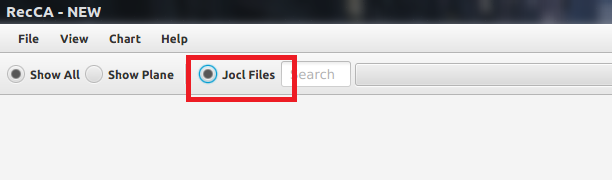
3) Выбрать номер временного шага. Для этого можно:
- а. выбирать вручную из выпадающего меню в верхней панели инструментов;
- б. воспользоваться полем поиска и Необходимо вводит временной шаг в формате "001000", т.е. вводимое число должно содержать в себе 6 чисел;
- в. использовать кнопки для удобного выбора номера шага.
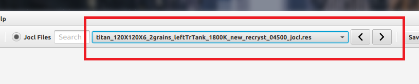
4) Если в папке с выбранным проектом имеется созданный ранее файл с расширением "view", то можно в верхней панели инструментов выбрать нужный файл из выпадающего меню.
Если такого файла не существует, то:
- а. можно нажать кнопку "Save View" и создать файл, введя параметры камеры
- б. настроить желаемый вид через интерфейс и создать файл.
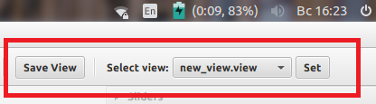
5) Выбрать желаемый параметр в правой панели инструментов и нажать клавишу "Show".
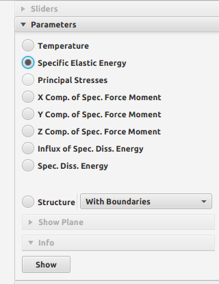
В результате в центральной части экрана отобразится 3D модель образца.
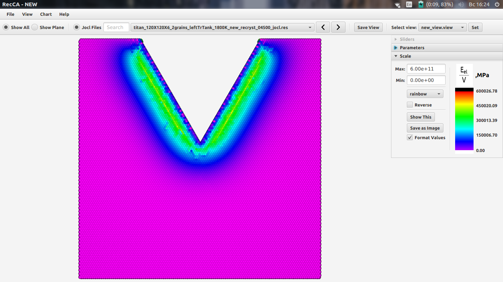
Дальнейшая настройка
Настройка шкалы
- 1) в поля "Max Value" и "Min Value" ввести нужные значения;
- 2) в выпадающем меню выбрать нужную шкалу;
- 3) для задания перевёрнутой шкалы выбрать "Reverse";
- 4) нажать "Show This".
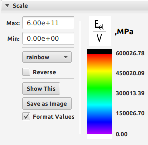
Отображение структуры
- В правой панели инструментов выбрать "Structure", после чего
- рядом в выпадающем меню можно выбрать тип структуры или
- пункт "Materials" для отображения материалов в образце.
Note:
- Для отображения структуры необходимо, чтобы в выбранной папке были файлы с расширениями "grn" и "clrs".
- Для отображения материалов необходимо, чтобы в выбранной папке был файл с расширением "grn".
Сохранение изображений
Изображения сохраняются в виде файлов с расширением "png". Можно сохранять изображения:
- а) области экрана, в которой отображается образец;
- б) области экрана, в которой отображается шкала;
- в) областей экрана в которых отображаются и образец, и шкала.
Для сохранения изображения необходимо
- в Меню выбрать File -> Save -> и далее выбрать нужный вариант сохранения.
- В результате появится новое окно, в котором необходимо:
- а. задать путь к папке, в которую нужно поместить файл с изображением;
- б. задать имя файла;
- в. нажать кнопку "Save".
Работа с графиками
Начало работы
Для начала работы с графиками необходимо выбрать в Meню Chart -> Build Chart...
Note:
- Перед работой с графиком в главном окне интерфейса необходимо открыть папку с проектом,
- а для работы с файлами типа "relValues.res" выбрать пункт "Jocl Files".
В результате откроется новое окно для построения графиков.
- В этом окне в Меню File -> Open Seca File... появится диалоговое окно, в котором следует выбрать файл с расширением "seca".
- Далее в правой панели инструментов в выпадающем меню "Parameters" следует выбрать нужный параметр, нажать "Show New Chart" и
- настроить вид графика.
Настройка графика
В правой панели инструментов можно выбрать
- "AutoRanging" для автоматического построения осей графиков (начальные значения на осях, и т.д).
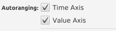
- Если отключить "AutoRanging", то на панели инструментов раскроется новое окно.
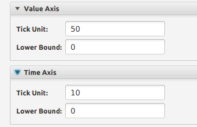
- В поле "Tick Unit" нужно ввести интервал для осей.
- В поле "Lower Bound" нужно ввести начальные значения для осей.
- Во вкладке "Chart Preferences" можно изменить:
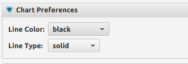
- "Line Color" - цвет графика
- "Line Type" - тип линии (сплошная или пунктирная).
- Во вкладке "Other Settings" можно воспользоваться следующими опциями:
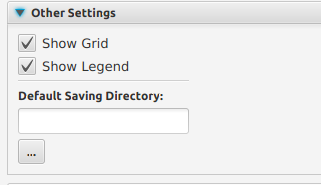
- "Show Grid" - включает/выключает отображение сетки;
- "Show Legend" - включает/выключает отображение надписи в самом низу графика (легенды).
- Во вкладке "Info" отображается информация касательно графика:
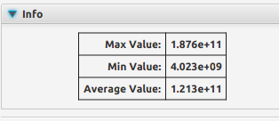
- "Max Value" - максимальное значение отображаемого параметра;
- "Min Value" - минимальное значение отображаемого параметра;
- "Average Value" - среднее значение отображаемого параметра.